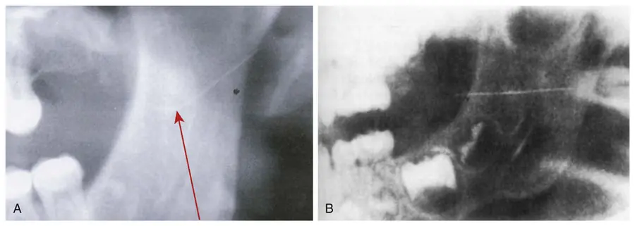

نسخه استخراجشده؛ ترجمه یا تأیید علمی انجام نشده است. وضعیت: captured
چند دقیقه پس از IANB سمت راست، بیمار میگوید چشم راستش کامل بسته نمیشود و لب بالایش در همان سمت افتاده است. هنگام تزریق سوزن به استخوان نخورده بود. چه اتفاقی افتاده و چه میکنی؟
وقتی سوزن به استخوان نمیخورد، نوکش ممکن است پشت لبهی خلفی راموس و درون غدهی پاروتید باشد؛ همانجا که شاخههای عصب صورتی (زوج هفتم) میگذرند. دارو این عصب حرکتی را از کار میاندازد: پلک پایین بسته نمیشود و لب بالا در همان سمت میافتد. بیحسی حسی معمولاً کم است یا اصلاً نیست.
پیشگیری ساده است: بدون برخورد با استخوان، دارو نریز. تماس سوزن با سطح داخلی راموس عملاً جلوی رسیدن دارو به پاروتید را میگیرد. اگر هنگام ورود سوزن بیمار حس «برقگرفتگی» گزارش کرد، سوزن به عصب خورده است؛ عصب لینگوال شایعترین عصبی است که پس از تزریق دچار پارستزی میشود.
هماتوم پس از IANB نادر است: تورمی در سمت داخل راموس که معمولاً فقط داخل دهان دیده میشود. دستکم ۳ تا ۵ دقیقه روی ناحیه فشار بده. تورم و تغییر رنگ در ۷ تا ۲۱ روز برطرف میشود.

تریسموس: کمی درد عضله هنگام باز کردن دهان، پس از رفتن بیحسی، بسیار شایع است؛ محدودیت شدید باز شدن دهان نادر است. ورود مکرر سوزن و حجم زیاد دارو، مثلاً پس از چند IANB ناموفق، خطرش را بالا میبرد.
همهی موارد گزارششده در IANB یا PSA بوده، بیشتر با سوزن کوتاه یا گیج ۳۰ که تا هاب وارد شده است؛ سوزن هم از هاب میشکند، نه از تنه.
IANB برای کودک خردسال و بیماری که احتمال گاز گرفتن لب و زبانش زیاد است (مثلاً بیمار با ناتوانی ذهنی یا جسمی) با احتیاط انتخاب میشود. IANB دوطرفه هم بهندرت لازم است؛ برای دندانهای قدامی، IANB یک طرف و بلاک اینسیزیو در طرف دیگر جایگزین خوبی است.
نوع سؤال: ساخت کلمه · 7 خانه
حروف منبع: ا · ی · پ · و · د · ر · ت